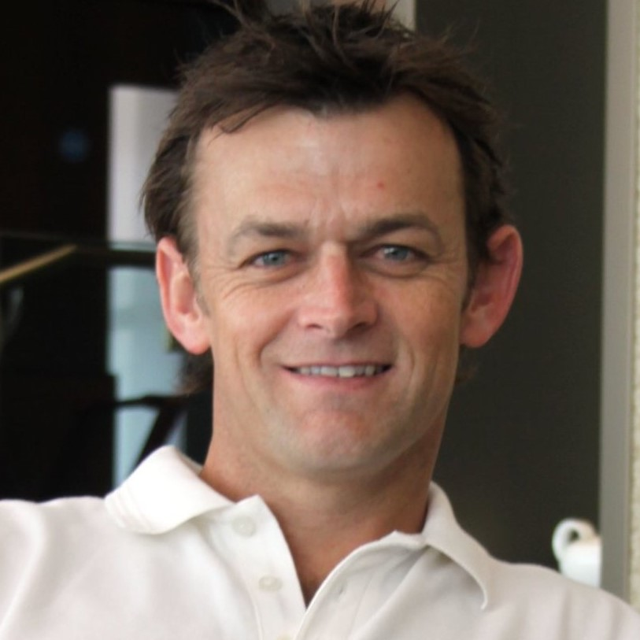
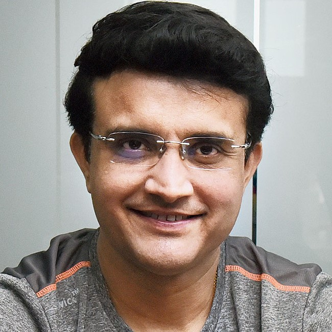
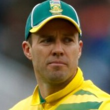
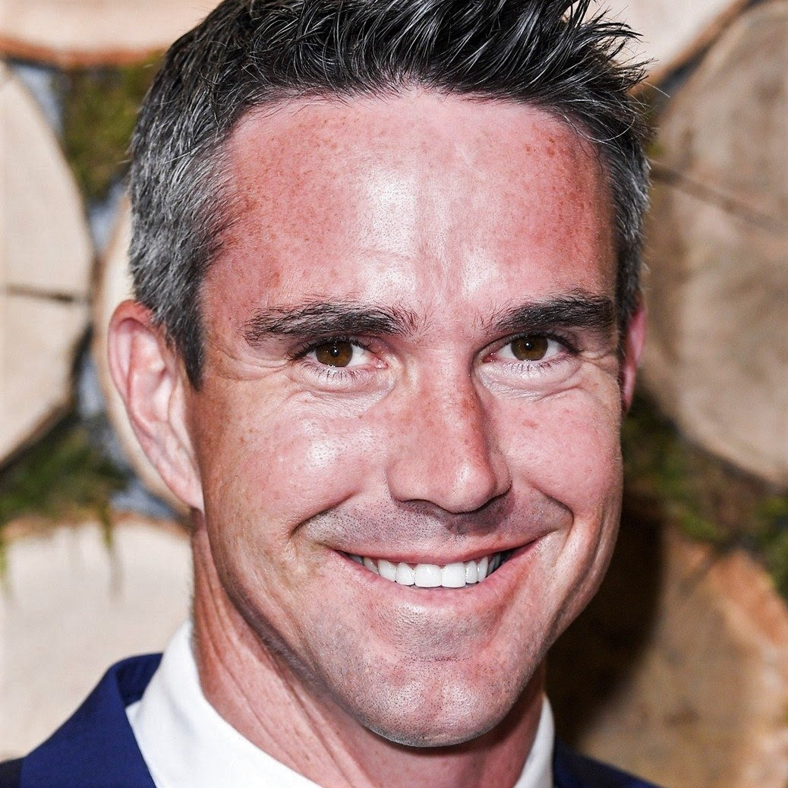
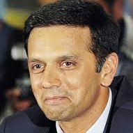
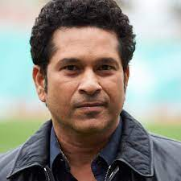
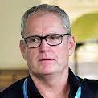
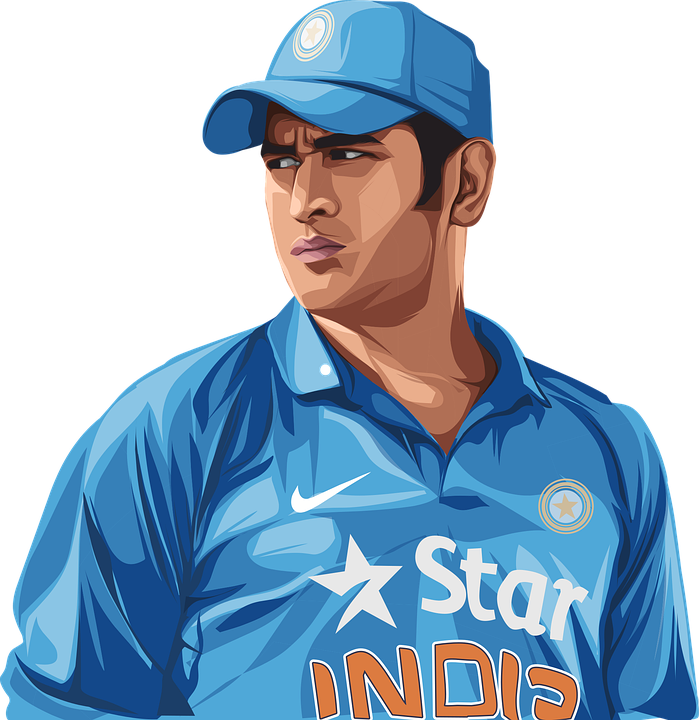
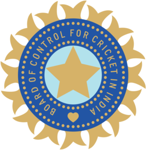
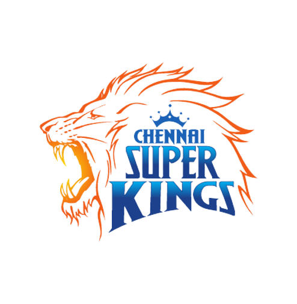

MS Dhoni is my hero. We talk a lot about Sachin Tendulkar, Virender Sehwag. But this boy has much talent then anyone else.

Adam Gilchrist
MS is not the next Gilchrist, he is the first MS Dhoni.
Gary Kirsten
I would go to war with Dhoni by my side.

Sourav Ganguly
I wish I would have Dhoni in my 2003 World Cup team. I was told that when we were playing the 2003 World Cup final he was still a ticket collector with Indian Railways. Unbelievable!

AB De Villiars
I would play MS Dhoni in my team every day of every year. He can be 80, in a wheelchair, and he would still play for my team.

Kevin Peterson
MS Dhoni is the cleverest captain I have ever seen

Rahul Dravid
Dhoni is best captain, very uncomplicated, always led by example.

Sachin Tendulkar
Dhoni is the best captain I have played under. He always tried to be a step ahead of the opposition.

Tom Moody
India is lucky to have MS Dhoni as captain.

Statistics
Captainship
ICC Tournament Captainship
IPL Captainship
Boundaries
Strike Rate & Average
50's - 100's
Runs Scored
Wicket-Keeper
Biography
Early Life
Mahendra Singh Dhoni, popularly known as ‘MS Dhoni’ was born in a middle-class Rajput family on 7 July 1981 in Ranchi, Jharkhand (then in Bihar).
His father, Pan Singh, was an employee at MECON. His mother, Devki Devi, is a homemaker.
He completed his schooling at DAV Jawahar Vidya Mandir in Shyamali, Ranchi.
During his school days, he used to play badminton and football. He played as a goalkeeper in a local football team.
Watching his eye-catchy skills, his football coach sent him to a local cricket club to play cricket.
He never played cricket before but he managed to grab the concept perfectly.
His wicket-keeping skills amazed everyone in the club.
He was appointed as the wicketkeeper for the local team on a regular basis.
Later, he started to focus primarily on cricket and left his glory days of football and badminton behind.
It was a drastic change in his life. He started to take professional coaching after Class X.
He was also a meritorious student and teachers respected him for his versatile nature.
He used to manage his studies and sports sessions perfectly. His family was very supportive of his ambitions.
Initial Hustle
MS Dhoni was selected as the U-19 Bihar cricket squad member in 1998-99.
When he was 18 years old, he played the first match in Ranji Trophy for Bihar and scored a half-century.
Just after 5 years, his skills caught the eyes of team selectors of the Indian national cricket team.
His excellent performance and a century for the East Zone helped the team to clinch the Deodhar Trophy.
His 60 runs also helped his team to clinch the Duleep Trophy.
As time passed, he joined Indian Railways as a Train Ticket Examiner (TTE) in Midnapore District, West Bengal in 2000.
He was very honest. He also had a mischievous side.
He once dressed as ghosts with his friends and scared the night guards patrolling the railway quarters.
He eventually became better in his cricketing skills.
His performance in the Triangular Tournament held in Kenya against Pakistan.
This christened him with a new name ‘clinical destroyer’ of commendable bowling attacks.
PC Poddar, the Bengal captain back in the 60s, identified his skills and immediately called the National Cricket Academy.
Legacy and Dominance in ipl
Dhoni was contracted by the Chennai Super Kings (CSK) for US$1.5 million. This made him the most expensive player in the IPL for the first season auctions.
MS is the only player in IPL history to get offers from all eight franchises.
Under his captaincy, CSK won the 2010, 2011, 2018 and the 2021 Indian Premier League titles and the 2010 and 2014 Champions League T20 titles and ended up as a runner-up in 2008, 2012, 2013, 2015 and 2019 league seasons.
MS Dhoni became the first player to play 200 T20 matches for Super Kings. The former India captain is already on top of the list of most matches played in the Indian Premier League. Mahendra Singh Dhoni is also one of the only three captains to have won the Indian Premier League twice, with CSK.
In 2015, Chennai Super Kings got banned from IPL for 2 years by R.M. Lodha committee of supreme court of India. It was banned due to the illigal betting of their official Gurunath Meiyappan. He was arrested on the charges of spot-fixing According to Mahendra Singh it was darkest period of his career. He said "The biggest crime that I can commit is not a murder, it is actually match-fixing".
In 2016, Rising Pune Supergiant (RPS), a debuting IPL franchise team made him captain but after poor performance of the team in that season they removed Dhoni from captain's position and chose Steve Smith, then Australian national team captain, for the post. Dhoni played as wicketkeeper batsman in 2017 season for RPS.
In the 2018 IPL season, CSK returned to IPL, and he was again appointed to lead the franchise by the franchise. Dhoni scored 455 runs in that season and led his side to their third IPL title.
As a batsman 2020 and 2021's season was bad for MS Dhoni, he scored 200 runs in 14 innings in 2020 and 116 runs in 16 innings with the poor avarage of 15.29 in 2021 IPL season.
He led the franchise to 4th title in 2021 Indian Premier League season. Dhoni got retained by CSK for ₹12 Cr, before IPL 2022 player's auction. He stepped down from captaincy on 24 March 2022, handing it over to Ravindra Jadeja.
International Sensation
Dhoni was selected in the ODI team for the Bangladesh tour in 2004/05.
In his debut match, Dhoni was run out for the duck.
Despite playing an average series against Bangladesh, Dhoni was picked for the ODI series against Pakistan.
In the second match of the series, Dhoni scored 148 runs in 123 balls and made a record for the highest score by an Indian wicket-keeper.He played in the first two matches in the Sri Lankan Bilateral ODI series that was held between October-November 2005.
He was promoted to No. 3 in the third ODI held at Sawai Mansingh Stadium. Dhoni scored an unbeaten 183 off 145 balls against Sri Lanka in a winning cause.
He received the Man of the Series award.
In a series against Pakistan, Dhoni scored 72 runs off 46 balls in the third match, helped India to lead the series 2-1. In the final match, Dhoni scored 77 runs off 56 balls, helping India to win the series by 4-1.
On April 20, 2006, he was ranked as the number one batsman in ICC ODI Rankings sidelining Ricky Ponting. India had disappointing tournaments-- DLF Cup 2006-07, 2006 ICC Champions Trophy.
Dhoni was named vice-captain of the ODI team for the series against South Africa and England.
In June 2007, Dhoni received an A Grade contract from the BCCI.
Rise of a Leader
In September 2007, for the World Twenty20 matches, Dhoni was elected as the captain of the Indian team.
In September 2007, Dhoni shared a record with his idol Adam Gilchrist-- most dismissals in an innings in ODI.
In 2009, during the series between India and Australia, Dhoni scored 124 runs off 107 balls in the second ODI and 71 runs off 95 balls in the third ODI. On September 30, 2009, Dhoni took his first wicket in international cricket against West Indies in the Champions Trophy. In 2009, he topped the ICC ODI Batsman ranking.
In 2011, Dhoni-led India to the finals with a victory over Australia in the quarter-finals and Pakistan in the finals.
Dhoni helped India win by chasing a target of 275 against Sri Lanka in the finals with Gautam Gambhir and Yuvraj Singh. Dhoni finished the match with a historical six with a score of 91*. He bagged Man of the Match for his outstanding performance in the 2011 Cricket World Cup.
In 2013, India won ICC Champions Trophy and Dhoni became the first and the only captain in the history of cricket to claim all the ICC trophies.
In the same year, he became the second India batsman after Sachin Tendulkar to score 1,000 or more ODI runs against Australia.
During 2013-14, India toured South Africa and New Zealand but lost both the series.
In 2014, India won the ODI series in England by 3-1 and in India by 2-1 against West Indies.
In 2014, ICC named him as the captain and wicketkeeper of the 'Team of the Tournament' for the T20 World Cup.
During the 2015 Cricket World Cup, Dhoni became the first Indian captain to win all group stage matches in such a tournament.
Despite a great start in the 2015 Cricket World Cup, India lost the title to the eventual champions-- Australia.
Passing the Baton
In January 2017, Dhoni stepped down as the captain of the Indian team in all the limited-over formats. MS Dhoni played a key role in building the Indian Cricket Team for future generation
In the ODI home series against England, he scored well and was named as a wicketkeeper of the 'Team of the Tournament' at the 2017 Champions Trophy and ODI XI of the year by Cricbuzz.
In the same year, during the ODI against Sri Lanka, he became the first wicket-keeper to effect 100 stumpings.
In the 2014-15 season, Dhoni played his last test series against Australia and captained the second and third test matches. Dhoni announced his retirement from the Test format, following the third test in Melbourne. In his last test match, Dhoni effected nine dismissals and broke Kumar Sangakkara record for stumpings with 134 in all the formats.
In 2018, the ban on Chennai Super Kings was uplifted and the team returned to play the IPL.
Dhoni was again contracted by CSK and led the team to win the third IPL title.
In 2019, he again captained for CSK and the team emerged to be one of the strongest in the season.
However, Mumbai Indians won the title.
In the 2019 Cricket World Cup, Dhoni was selected for the Indian team.
Dhoni played well against South Africa, Australia and West Indies but was criticised for his strike rate against Afghanistan and England.
In the semi-finals against New Zealand, Dhoni scored a half-century in the second innings but was run out at a very crucial stage. With his dismissal, India's World Cup run ended.
End Of an Era
Dhoni announced his retirement from international cricket on 15 August 2020 on the day of India's 74th independence by sharing a video on Instagram.
He did so by posting a video on Instagram that contained pictures from both the best and the worst moments of his career with the song Mai Pal do Pal ka Shayar Hoon playing in the background.
The video had been captioned as "Thanks a lot for ur love and support throughout from 1929 hrs consider me as Retired". Despite the fact that it had been speculated that MS Dhoni would retire shortly, the news came as a shock to everyone.
The boy from Ranchi, who made his ODI debut in 2004, changed the face of Indian cricket with his calm demeanour, sharp understanding of the game and astute leadership qualities.
Dhoni is one of the most well-liked and respected cricketers in the world, as well as one of the most successful captains.
After winning the ICC World T20 in its inaugural edition in South Africa in 2007, he led India to victory in the ICC Cricket World Cup in 2011.
Dhoni made history by being the first and only captain to win all three ICC Trophies when India won the ICC Champions Trophy in England in 2013.
While his exploits in the limited-overs formats are well-known, it was also under his supervision that India rose to the top of the Test rankings in 2009, where they remained for over 600 days.
He has guided India to 21 Test victories at home, the most of any Indian captain.
Leaving behind a rich legacy that will be difficult to replicate, Dhoni holds the record for most international matches as captain (332). Unarguably the quickest man behind the wicket, Dhoni has 195 international stumpings, the most by any wicket-keeper.
Patriot On Duty
Dhoni holds a honorary rank of Lieutenant Colonel in the Parachute Regiment of the Indian Territorial Army (106 Para TA battalion).
The honorary rank was presented to him by the Indian Army in 2011 for his service to the nation as a cricketer.
After completing five parachute training jumps from Indian Army aircraft in the Agra training camp,
he became a qualified paratrooper in 2015.
In August 2019 he completed a two-week stint with the Territorial Army in Jammu and Kashmir.
Honours
Hall Of Fame
2018: Padma Bhushan, India's third-highest civilian award
2009: Padma Shri, India's fourth-highest civilian award
2007–08: Rajiv Gandhi Khel Ratna, India's highest honor given for achievement in sports
ICC ODI Player of the Year: 2008, 2009
ICC World ODI XI: 2006, 2008, 2009, 2010, 2011, 2012, 2013, 2014 [captain in 2009, 2011–2014]
ICC World Test XI: 2009, 2010, 2013
Castrol Indian Cricketer of the Year: 2011
ICC Men's ODI team of the decade: 2011 - 2020 [captain and wicketkeeper]
ICC Men's T20I team of the decade: 2011 -2020 [captain and wicketkeeper]
ICC Spirit of the cricket award of the decade: 2011 - 2020
Records
MS Dhoni had broken numerous records and brought the most glory to his team and country. He is one of the most well-known people in the planet. He has established a positive image in the eyes of his opponents by achieving several accomplishments in practically every field.

T20I
ODI
TEST

IPL
T20I Records
Most wins in T20Is as captain (41).
Most matches as captain in T20Is (72).
Most matches in T20I history as both captain and wicket-keeper (72).
Most consecutive T20I innings without a duck (84).
Dhoni holds the record for playing the most T20I innings (76) and scored the most runs(1,153) before scoring a fifty.
Most dismissals as wicket-keeper in T20Is (87).
Most stumpings as wicket-keeper in T20Is (33).
Most stumpings as wicket-keeper in T20Is (33).
Most stumpings as wicket-keeper in T20Is (33).
Most catches as wicketkeeper in a T20I innings (5).
ODI Records
Dhoni is third captain (and the first non-Australian) overall to win 100 games.
Fourth Indian to reach 10,000 ODI runs after Sachin Tendulkar, Sourav Ganguly & Rahul Dravid and also the second wicket-keeper to reach the milestone.
First player to pass 10,000 runs in ODI cricket with having a career average of over 50.
Dhoni has the fifth highest batting average (51.09), among cricketers with more than 5,000 runs and the second highest batting average among players with an aggregate of over 10,000 runs.
Most career runs in ODI history when batting at number 6 position (4031)
Only player to score more than one hundred in ODI cricket when batting at number 7 position or lower (Dhoni has 2 centuries at number 7).
Most not outs (82) in ODIs.
First Indian and fifth overall to hit 200 sixes in ODIs.
Dhoni's 183* against Sri Lanka in 2005 is the highest score by a wicket-keeper.
Dhoni's 113 against Pakistan in Chennai in 2012 is the highest by a captain batting at number 7.
Dhoni and Bhuvneshwar Kumar were involved in a partnership of 100 not out against Sri Lanka, which is India's highest eighth wicket partnership in ODIs.
Most unbeaten innings and highest average (among batsmen with more that 20 such innings) in successful ODI run-chases.
Holds the record for playing the most matches in ODI history as captain who has also served as a wicket-keeper(200)
Dhoni holds the records of the most dismissals in an innings (6) and career (432) by an Indian wicket-keeper.
Dhoni has the most stumpings (120) by any wicket-keeper in an ODI career and is so far the only keeper to pass 100 stumpings
First Indian wicket-keeper to take 300 ODI catches and fourth wicket-keeper in the world to achieve the feat.
Test Records
Under Dhoni's captaincy, India topped the Test cricket rankings for the first time, in 2009.
Dhoni has the most overseas Test defeats by an Indian captain, with 15.
Dhoni is the first Indian wicket-keeper to complete 4,000 Test runs.
Dhoni's 224 against Australia in Chennai is the third highest score by an Indian captain. En route to 224, Dhoni registered the highest Test score by an Indian wicket-keeper when he was on 193, beating Budhi Kunderan's 192. It was also the highest score by a wicket-keeper–captain beating Englishman Alec Stewart's 164.
Dhoni's maiden century against Pakistan in Faisalabad (148) is the fastest century scored by an Indian wicket-keeper, and fourth overall.
After hitting a six in the third Test against England in Southampton, Dhoni completed 50 sixes as a captain, an Indian record.
Dhoni, with 294 dismissals in his career, ranks first in the all-time dismissals list by Indian wicket-keepers.
Dhoni shares the record for most dismissals in an innings (6, with Syed Kirmani) and in a match (9) by an Indian wicket-keeper.
IPL Records
MS Dhoni has played in 204 IPL matches which is the most matches by a player.
MS Dhoni has scored 832 runs vs RCB which is the most by a player vs RCB is IPL.
MS Dhoni has smashed 209 sixes in IPL so far, most by an IND batsman and 3rd overall in IPL.
MS Dhoni is the only skipper to have 100 wins to his name in IPL.
MS Dhoni has got most sixes in death overs (17-20) in IPL – 141.
MS Dhoni led CSK for 85 consecutive matches from 6 April 2013 to 14 April 2019 which is 2nd most consecutive matches by a captain for a team in T20s.
Dhoni is the only Indian player to score a half-century in his 40's as well.
MS Dhoni is the only wicket keeper to complete 150 wicketkeeping dismissals in IPL.